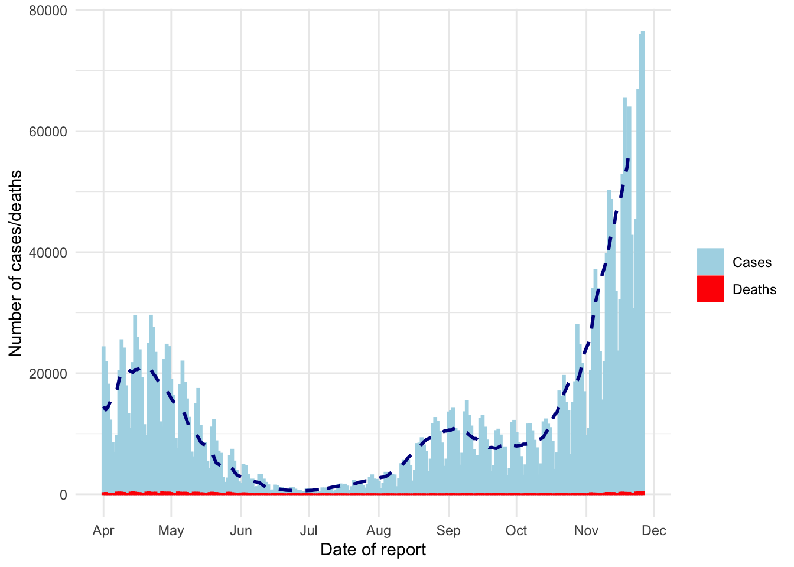
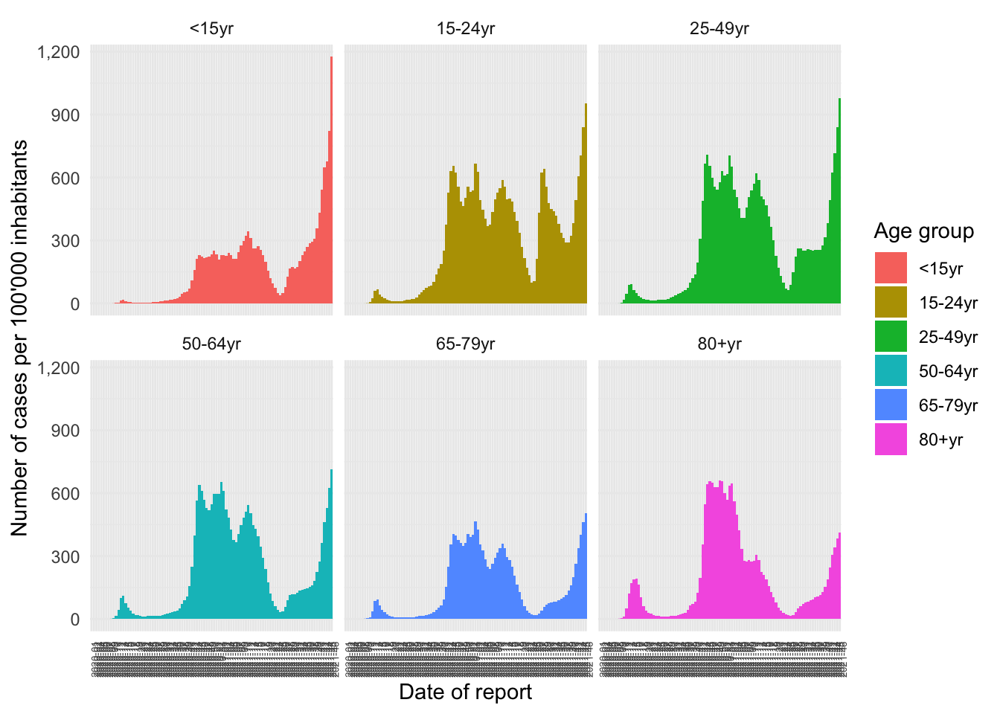

Last updated: 2021-11-26
Checks: 7 0
Knit directory: Introduction2Rstudio/
This reproducible R Markdown analysis was created with workflowr (version 1.6.2). The Checks tab describes the reproducibility checks that were applied when the results were created. The Past versions tab lists the development history.
Great! Since the R Markdown file has been committed to the Git repository, you know the exact version of the code that produced these results.
Great job! The global environment was empty. Objects defined in the global environment can affect the analysis in your R Markdown file in unknown ways. For reproduciblity it’s best to always run the code in an empty environment.
The command set.seed(20211111) was run prior to running the code in the R Markdown file. Setting a seed ensures that any results that rely on randomness, e.g. subsampling or permutations, are reproducible.
Great job! Recording the operating system, R version, and package versions is critical for reproducibility.
Nice! There were no cached chunks for this analysis, so you can be confident that you successfully produced the results during this run.
Great job! Using relative paths to the files within your workflowr project makes it easier to run your code on other machines.
Great! You are using Git for version control. Tracking code development and connecting the code version to the results is critical for reproducibility.
The results in this page were generated with repository version a7ba898. See the Past versions tab to see a history of the changes made to the R Markdown and HTML files.
Note that you need to be careful to ensure that all relevant files for the analysis have been committed to Git prior to generating the results (you can use wflow_publish or wflow_git_commit). workflowr only checks the R Markdown file, but you know if there are other scripts or data files that it depends on. Below is the status of the Git repository when the results were generated:
Ignored files:
Ignored: .DS_Store
Ignored: .Rhistory
Ignored: .Rproj.user/
Ignored: First-steps-in-epidemiological-data-reporting_files/
Ignored: analysis/.DS_Store
Untracked files:
Untracked: README.html
Untracked: data/bumblebee_data.csv
Untracked: data/bumblebee_data.txt
Untracked: output/bad_ggplot.pdf
Untracked: output/first_ggplot.pdf
Untracked: output/second_ggplot.pdf
Untracked: site_libs/
Unstaged changes:
Deleted: analysis/Epidemiology_Rmarkdown.rmd
Note that any generated files, e.g. HTML, png, CSS, etc., are not included in this status report because it is ok for generated content to have uncommitted changes.
These are the previous versions of the repository in which changes were made to the R Markdown (analysis/Flexdashboard.Rmd) and HTML (docs/Flexdashboard.html) files. If you’ve configured a remote Git repository (see ?wflow_git_remote), click on the hyperlinks in the table below to view the files as they were in that past version.
| File | Version | Author | Date | Message |
|---|---|---|---|---|
| Rmd | a7ba898 | MartinGarlovsky | 2021-11-26 | add markdown, first epidemiology, and flexdashboard |
# create the ggplot for the number of cases and deaths in Germany from 31st March to today
cols <- c("Cases"="lightblue","Deaths"="red") #cols defines the colours in the legend that we want to draw. This is a special case here, because we need to specify colour and fill in the aesthetics to be able to draw a legend. However, we also have two geom_col() functions. So in order not to "confuse" ggplot() we have to tell it with the help of cols that Cases need to be lightblue and Deaths need to be red.
ggplot(data = covid19Germany)+ #tell ggplot() which data set to use, don't forget to link the different lines of code for your plot with a "+", otherwise not all commands will be executed
geom_col(
mapping = aes(x = dateRep, y = cases, colour="Cases", fill="Cases"),
width = 1)+ #geom_col produces bars for the aesthetics specified in the brackets. Here for daily counts, set width = 1 to avoid white space between bars
geom_col(
mapping = aes(x = dateRep, y = deaths, colour="Deaths", fill="Deaths"),
width = 1)+ #now the same for the deaths
tidyquant::geom_ma(aes(x = dateRep, y = cases), # plot moving average
n = 7,
size = 1,
colour = "darkblue")+
scale_fill_manual(name="",values=cols)+ #define fill colours
scale_colour_manual(name="",values=cols)+ #define border colours, at the same time ggplot draws a legend
# labels for x-axis
scale_x_date(
date_breaks = "1 month", #labels every month
date_minor_breaks = "1 month", #gridlines every month
date_labels = '%b')+ #labelled by month with the year below
theme_minimal()+ #theme style, the theme is the overall look of the figure, try other themes such as theme_classic() or others: https://ggplot2.tidyverse.org/reference/ggtheme.html
labs(x = "Date of report", #x-axis title
y = "Number of cases/deaths")
#load package
library(scales) #to convert scientific numbers to decimal numbers
Attaching package: 'scales'The following object is masked from 'package:purrr':
discardThe following object is masked from 'package:readr':
col_factorcovid19_age_incidence_means<-covid19_age %>% group_by(year_week,age_group) %>% summarise(mean_14d_incidence=mean(rate_14_day_per_100k,na.rm=T)) # create a tibble with mean 14 day incidence for each age group across all EU countries`summarise()` has grouped output by 'year_week'. You can override using the `.groups` argument.ggplot(data = covid19_age_incidence_means)+
geom_col(
mapping = aes(x = year_week, y = mean_14d_incidence, fill=age_group),
width = 1)+
# create facets
facet_wrap( # split your plot into several plots to show the epi curves for each age group
~age_group, # define for which variable you want to produce facets
ncol = 3, # number of columns for the arrangement of each small plot
strip.position = "top")+ # define where the age group should be added to each small plot
theme_minimal()+
# rotate labels for x-axis
theme(axis.text.x = element_text(angle = 90, size = 5))+
# make y-axis numbers non-scientific
scale_y_continuous(labels=comma)+
labs(x = "Date of report",
y = "Number of cases per 100'000 inhabitants",
fill="Age group")Warning: Removed 6 rows containing missing values (position_stack).
| country | case_count | death_count | recovered | CFR | lower_CI | upper_CI |
|---|---|---|---|---|---|---|
| Austria | 567864 | 2594 | 565270 | 0.457 | 0.439 | 0.474 |
| Belgium | 786929 | 3726 | 783203 | 0.473 | 0.458 | 0.489 |
| Bulgaria | 346496 | 14823 | 331673 | 4.278 | 4.209 | 4.347 |
| Croatia | 320006 | 4641 | 315365 | 1.450 | 1.409 | 1.492 |
| Cyprus | 87279 | 329 | 86950 | 0.377 | 0.336 | 0.418 |
| Czechia | 556618 | 5706 | 550912 | 1.025 | 0.999 | 1.052 |
| Denmark | 236915 | 424 | 236491 | 0.179 | 0.162 | 0.196 |
| Estonia | 114090 | 879 | 113211 | 0.770 | 0.720 | 0.821 |
| Finland | 104033 | 421 | 103612 | 0.405 | 0.366 | 0.443 |
| France | 3076677 | 23413 | 3053264 | 0.761 | 0.751 | 0.771 |
| Germany | 2841297 | 24134 | 2817163 | 0.849 | 0.839 | 0.860 |
| Greece | 648145 | 9676 | 638469 | 1.493 | 1.463 | 1.523 |
| Hungary | 416455 | 13129 | 403326 | 3.153 | 3.099 | 3.206 |
| Iceland | 11100 | 6 | 11094 | 0.054 | 0.011 | 0.097 |
| Ireland | 311529 | 971 | 310558 | 0.312 | 0.292 | 0.331 |
| Italy | 1407329 | 24607 | 1382722 | 1.748 | 1.727 | 1.770 |
| Latvia | 148399 | 2190 | 146209 | 1.476 | 1.414 | 1.538 |
| Liechtenstein | 1743 | 5 | 1738 | 0.287 | 0.035 | 0.538 |
| Lithuania | 249346 | 3078 | 246268 | 1.234 | 1.191 | 1.278 |
| Luxembourg | 26518 | 121 | 26397 | 0.456 | 0.375 | 0.538 |
| Malta | 10035 | 76 | 9959 | 0.757 | 0.587 | 0.928 |
| Netherlands | 1269973 | 2656 | 1267317 | 0.209 | 0.201 | 0.217 |
| Norway | 157244 | 389 | 156855 | 0.247 | 0.223 | 0.272 |
| Poland | 1145446 | 29794 | 1115652 | 2.601 | 2.572 | 2.631 |
| Portugal | 312137 | 1540 | 310597 | 0.493 | 0.469 | 0.518 |
| Romania | 825240 | 32420 | 792820 | 3.929 | 3.886 | 3.971 |
| Slovakia | 411235 | 4388 | 406847 | 1.067 | 1.035 | 1.099 |
| Slovenia | 197910 | 1085 | 196825 | 0.548 | 0.516 | 0.581 |
| Spain | 1836747 | 12472 | 1824275 | 0.679 | 0.667 | 0.691 |
| Sweden | 383615 | 1505 | 382110 | 0.392 | 0.372 | 0.412 |
sessionInfo()R version 4.0.3 (2020-10-10)
Platform: x86_64-apple-darwin17.0 (64-bit)
Running under: macOS Big Sur 10.16
Matrix products: default
BLAS: /Library/Frameworks/R.framework/Versions/4.0/Resources/lib/libRblas.dylib
LAPACK: /Library/Frameworks/R.framework/Versions/4.0/Resources/lib/libRlapack.dylib
locale:
[1] en_GB.UTF-8/en_GB.UTF-8/en_GB.UTF-8/C/en_GB.UTF-8/en_GB.UTF-8
attached base packages:
[1] stats graphics grDevices utils datasets methods base
other attached packages:
[1] scales_1.1.1 tidyquant_1.0.3
[3] quantmod_0.4.18 TTR_0.24.2
[5] PerformanceAnalytics_2.0.4 xts_0.12.1
[7] zoo_1.8-9 lubridate_1.7.10
[9] forcats_0.5.1 stringr_1.4.0
[11] dplyr_1.0.7 purrr_0.3.4
[13] readr_2.0.1 tidyr_1.1.4
[15] tibble_3.1.5 ggplot2_3.3.5
[17] tidyverse_1.3.1 flexdashboard_0.5.2
[19] workflowr_1.6.2
loaded via a namespace (and not attached):
[1] httr_1.4.2 sass_0.4.0 jsonlite_1.7.2 modelr_0.1.8
[5] bslib_0.2.5.1 assertthat_0.2.1 highr_0.9 cellranger_1.1.0
[9] yaml_2.2.1 pillar_1.6.4 backports_1.2.1 lattice_0.20-44
[13] glue_1.5.0 quadprog_1.5-8 digest_0.6.28 promises_1.2.0.1
[17] rvest_1.0.1 colorspace_2.0-2 htmltools_0.5.1.1 httpuv_1.6.2
[21] pkgconfig_2.0.3 broom_0.7.9 haven_2.4.3 whisker_0.4
[25] later_1.3.0 tzdb_0.1.2 git2r_0.28.0 generics_0.1.1
[29] farver_2.1.0 ellipsis_0.3.2 withr_2.4.2 cli_3.1.0
[33] magrittr_2.0.1 crayon_1.4.2 readxl_1.3.1 evaluate_0.14
[37] fs_1.5.0 fansi_0.5.0 xml2_1.3.2 tools_4.0.3
[41] hms_1.1.0 lifecycle_1.0.1 munsell_0.5.0 reprex_2.0.1
[45] compiler_4.0.3 jquerylib_0.1.4 rlang_0.4.12 grid_4.0.3
[49] rstudioapi_0.13 labeling_0.4.2 rmarkdown_2.10 gtable_0.3.0
[53] DBI_1.1.1 curl_4.3.2 R6_2.5.1 knitr_1.33
[57] utf8_1.2.2 rprojroot_2.0.2 Quandl_2.11.0 stringi_1.7.5
[61] Rcpp_1.0.7 vctrs_0.3.8 dbplyr_2.1.1 tidyselect_1.1.1
[65] xfun_0.25